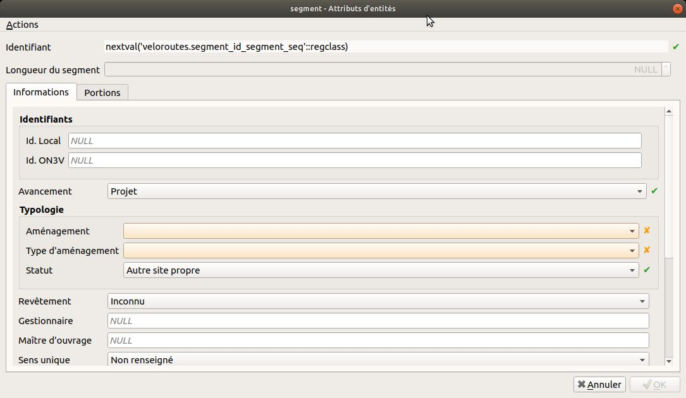
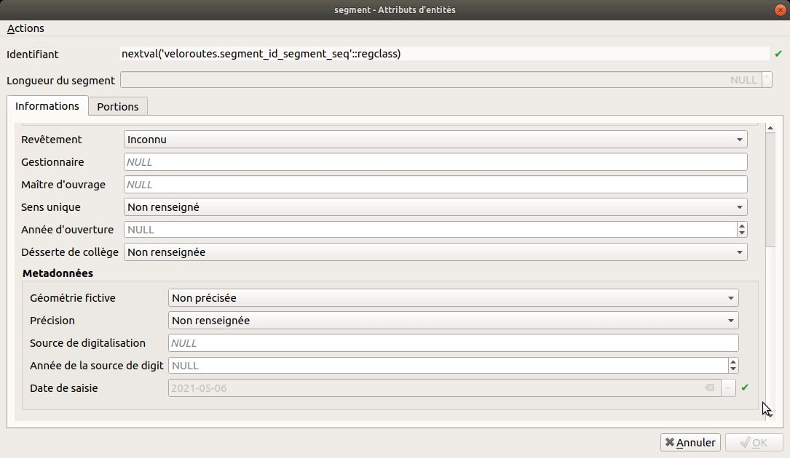
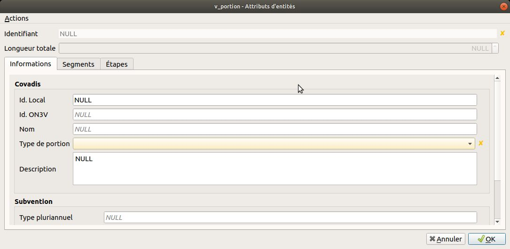
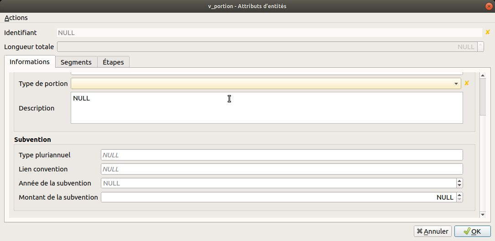
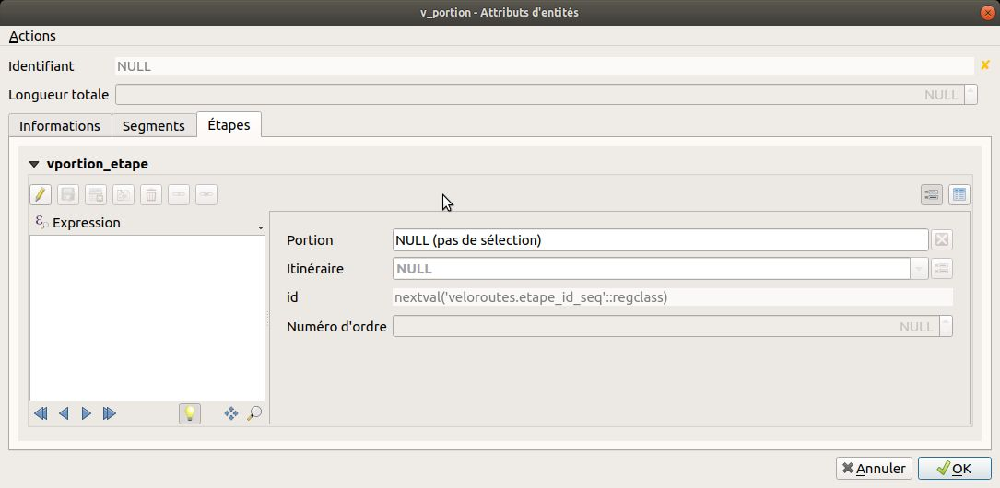
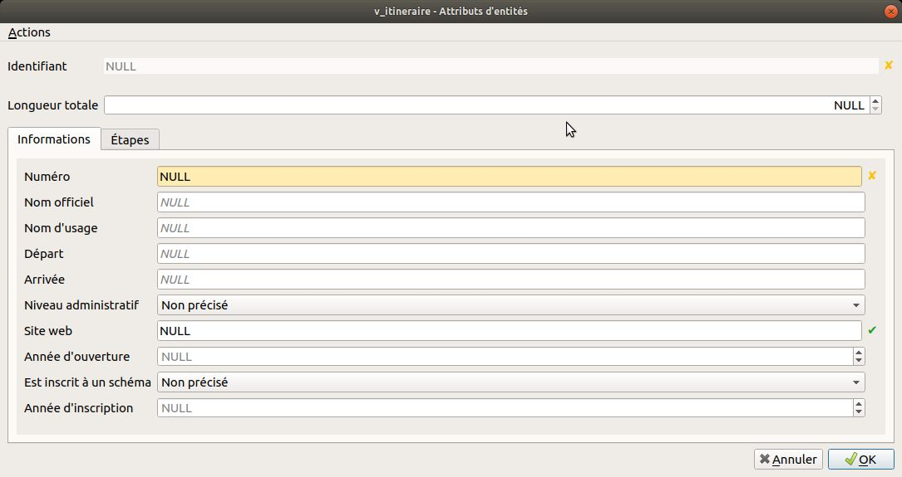

Saisie et gestion des données Véloroutes et Voies Vertes#
Une fois les couches chargées et les styles du plugin appliqués, le projet QGIS offre tous les outils nécessaires à la saisie et la gestion des données.
Saisie des segments#
Dans le modèle de données Véloroutes et Voies Vertes, les segments sont les éléments de base du réseau cyclable. Ils constituent les portions des itinéraires. Leurs géométries sont la base des portions et itinéraires.
Le formulaire#
Les segments sont des lignes qui doivent être unique en fonction du type d'aménagement, du revêtement, du gestionnaire, du sens de circulation, etc.


L'avancement permet de commencer par un projet dont la géométrie peut-être fictive. Une fois le tracé arrêté, la géométrie représente le parcours avant travaux. La géométrie peut-être découpée en fonction des changements de caractéristique.
Enfin le segment est ouvert à la circulation.
Les actions#
Le plugin a ajouté à la couche segment des actions : * Couper un segment en un point alias Couper un segment * Créer une portion à partir de segments sélectionnés alias Créer une portion
Couper un segment#
Cette action fonctionne de la façon suivante : * Passer la couche segment en édition * Cliquer sur Couper un segment dans le menu des actions * CLiquer sur la carte là où vous souhaitez couper le segment
Cette action conserve l'appartenance à une portion. Le segment qui aura été pointé sera réduit et le nouveau segment créé sera ajouter à la portion du segment initial.
Créer une portion#
Cette action fonctionne de la façon suivante : * Sélectionner le ou les segments constitutifs d'une nouvelle portion * Cliquer sur Créer une portion dans le menu des actions
Un segment peut-être un élément de plusieurs portions
Saisie des portions#
Dans le modèle de données Véloroutes et Voies Vertes, les portions sont constitués de segments et constituent les itinéraires. Une portion est une étape d'un itinéraire. Elle peut-être une variante, un portion temporaire ou une portion observable d'un itinéraire.
Une étape peut se parcourir en une journée.
Créer une portion#
La création d'une portion peut se faire de 2 façons : * A l'aide de l'action Créer une portion de la couche segment * En ajoutant une entité à la vue v_portion
Pour ajouter une entité à la vue v_portion, nous recommandons d'Activer l'accrochage et d'Activer le tracé en précisant un Offset.
Ensuite, il vous suffit de cliquer le long des segments en s'assurant que la prévisualisation de la ligne en cours de saisie suit bien les segments.
Lors de l'ajout d'une ligne à la vue v_portion, les segments pouvant composer la géométrie sont sélectionnés, une ligne est ajoutée à la table portion et la table element est complétée.
Le formulaire#
Le type de portion permet de définir le rôle de la portion au sein des itinéraires cyclables. Ces portions constituent une étape d'ititinéraire, une variante d'itinéraire, une portion temporaire d'itinéraire le temps que les aménagements (segments) en projet ou en travaux soient ouvert ou une portion observable qui est une portion sur lequel un compteur est installé.

Il est aussi possible de faire un suivi financier des aménagements (segments). Ce suivi se fait au niveau des portions.

Enfin un itinéraire principal est composé d’une collection ordonnée d’étapes cyclables.

Les actions#
Le plugin a ajouté à la vue v_portion des actions : * Suppression d'éléments de portion à partir des segments sélectionnés alias Suppression d'éléments de portion * Ajouter des éléments de portion à partir des segments sélectionnés alias Ajouter des éléments de portion * Créer un itinéraire à partir de portions sélectionnés alias Créer un itinéraire
Suppression d'éléments de portion#
Cette action fonctionne de la façon suivante : * Sélectionner le ou les segments constitutifs d'une portion * Identifier la portion concernée par cette modification * Cliquer sur Suppression d'éléments de portion dans le menu des actions
Ajouter des éléments de portion#
Cette action fonctionne de la façon suivante : * Sélectionner le ou les segments constitutifs d'une portion * Identifier la portion concernée par cette modification * Cliquer sur Ajouter des éléments de portion dans le menu des actions
Créer un itinéraire#
Cette action fonctionne de la façon suivante : * Sélectionner le ou les portions constitutives d'un nouvel itinéraire * Cliquer sur Créer un itinéraire dans le menu des actions
Une portion peut-être un élément de plusieurs portions
Saisie des itinéraires#
Dans le modèle de données Véloroutes et Voies Vertes, les itinéraires sont constitués de portions. Un itinéraire contient une suite d'étapes et potentiellement des variantes, des portions temporaires et des portions observables. Les étapes d'un itinéraire sont ordonnées.
Créer un itinéraire#
La création d'un itinéraire peut se faire de 2 façons : * A l'aide de l'action Créer un itinéraire de la vue v_portion * En ajoutant une entité à la vue v_itineraire
Pour ajouter une entité à la vue v_itineraire, nous recommandons d'Activer l'accrochage et d'Activer le tracé en précisant un Offset.
Ensuite, il vous suffit de cliquer le long des portions en s'assurant que la prévisualisation de la ligne en cours de saisie suit bien les portions.
Lors de l'ajout d'une ligne à la vue v_itineraire, les portions pouvant composer la géométrie sont sélectionnés, une ligne est ajoutée à la table itineraire et la table etape est complétée.
Le formulaire#
Un itinéraire se caractérise par un numéro, un nom offciel et d'usage, une ville de départ et d'arrivée, un niveau administratif (européen, national, régional ou départemental) et si celui-ci a été ou est inscript à un schéma d'aménagement et d'insvestissement.

Les actions#
Le plugin a ajouté à la vue v_itineraire des actions : * Suppression d'étape sur un itinéraire à partir de portions sélectionnées alias Suppression d'étapes * Ajouter des étapes à partir de portions sélectionnées alias Ajouter des étapes
Supression d'étapes#
Cette action fonctionne de la façon suivante : * Sélectionner le ou les portions constitutifs d'un itinéraire * Identifier l'itinéraire concerné par cette modification * Cliquer sur Suppression d'étapes dans le menu des actions
Ajouter des étapes#
Cette action fonctionne de la façon suivante : * Sélectionner le ou les portions constitutifs d'un itinéraire * Identifier l'itinéraire concerné par cette modification * Cliquer sur Ajouter des étapes dans le menu des actions